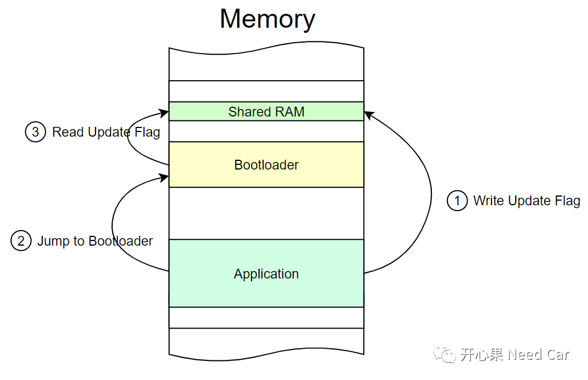
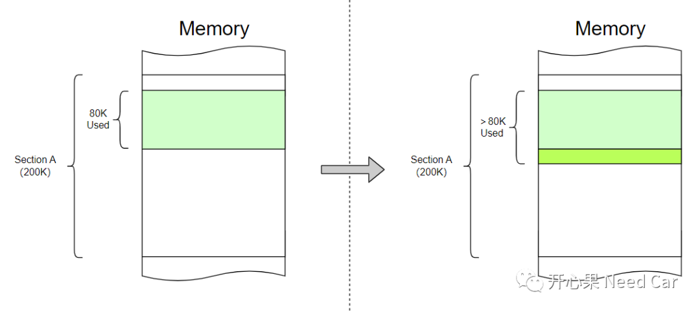
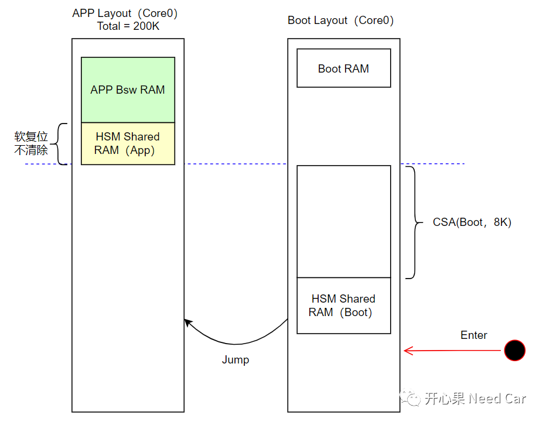
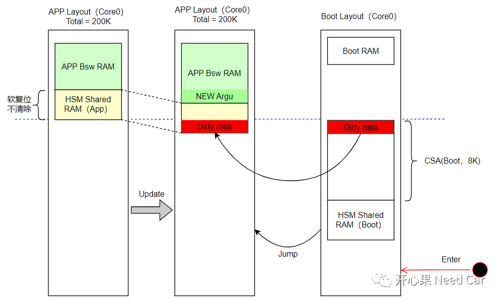

开心果 Need Car · 2023-09-08T11:28:00+08:00 · 微信原文
工程开发中，不同程序之间为了共享一些数据，会开辟一块独立的RAM区域，这块RAM区在程序跳转或者软复位的过程中不做初始化动作，以达到数据共享的目的。eg：Application （App）程序和Bootloader（Boot）程序之间，App为了告知Boot需要升级的请求，会将信息存储在某块共享RAM区，之后，程序跳转到Boot，Boot如果读取到App的升级请求信息，则对App程序进行更新，如果未读取到App请求升级的信息，则再次跳入App程序，示意如下所示：

虽然共享RAM区可以使得不同程序之间进行信息交互，但是，某些时候，如果RAM区处理不得当，反而会引入新的问题。本文分享一个工程问题：RAM区未初始化，导致的HSM（Hardware Security Module）失效问题。
1、问题描述
2、根因分析
既然，常规的诊断前置条件检查没有问题，则进一步的追查软件问题，注重确认最近的变更点，发现：软件新增了一些全局变量、一些变量的数据类型有变动（eg：uint8->uint32）。
新增全局变量和数据类型变动和本文的问题是怎样的一种关联呢？在搞清楚问题之前，先思考一下：新增全局变量或者数据类型变动会影响什么？答：内存区，即：全局变量数据类型扩大或者新增全局变量以后，需要消耗更多的内存区。
举例：在内存中划分一个200K的Section A区域，假设使用了80K空间，当新增全局变量和数据类型变动时，需要为这些变动量分配内存空间，进而使得内存使用空间＞80K，示意如下：

既然是内存空间有变动，又是如何影响HSM功能的呢？


3、修复措施
往期精彩回顾
Autosar EcuM：APP由RUN到POST_RUN浅析
如何基于HighTec，在链接文件（*.lsl）中设置自定义段